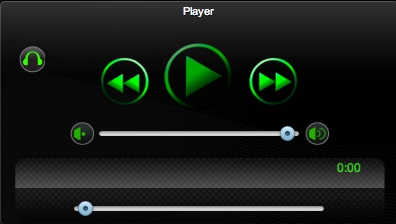
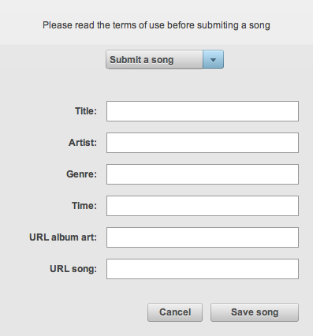

Features
Even though XYZRadio is still on beta there is a few things that you might find interesting!

Single or Multiuser fun!

XYZRadio has two different modes: single user mode and radio mode.
If you prefere to liten to your selected songs with no disturbance single player mode will let you do that. No rating, no DJ's just you and the music. Even in single player mode, you will still enjoy the collective music library.

In radio mode, the player will behave as a music radio. The server will choose randomly someone from the user data base and play one of his or hers playlists. You can enjoy listening to other peoples mixes. You may also rate the playlists, this rating helps promote the users' DJ talent. DJ's with high rating will play more often.
Changing looks!
XYZRadio comes with great background images to choose from. Dont like the current background? You may change it with one of the integrated creative common images in the preferences window, if you are still not satisfied you can upload you own!
Add new music!

If you are an independent artist and have a great tune that you would like to share ( and it's, of course, a creative commons song) you may upload it to the main library, everyone will be able to hear it and rate it!
Show your talent
If you are an up coming independent artist you may have a special artist account. With these types of accounts, users will be able to follow you as a fan. They will be alerted when you upload new music!